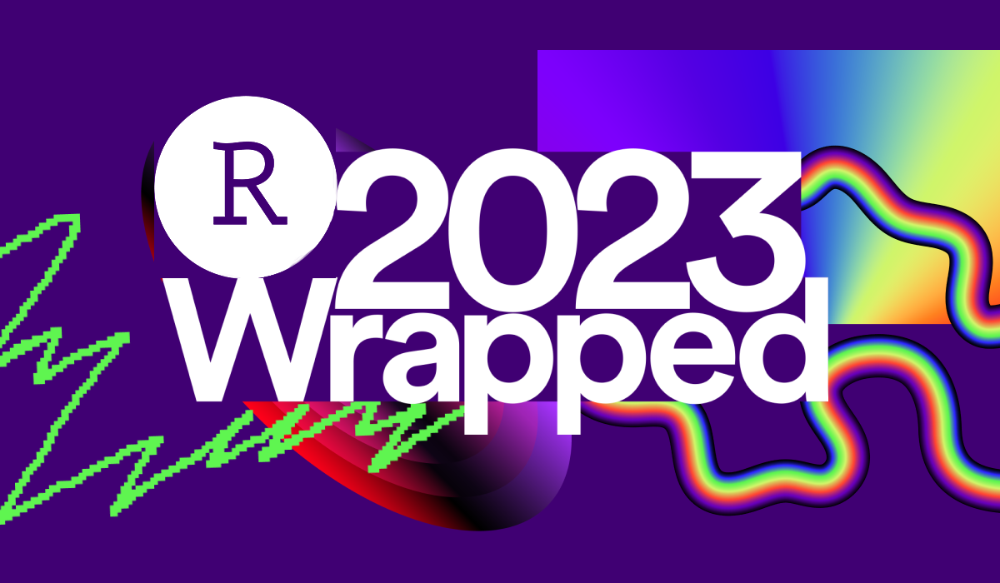
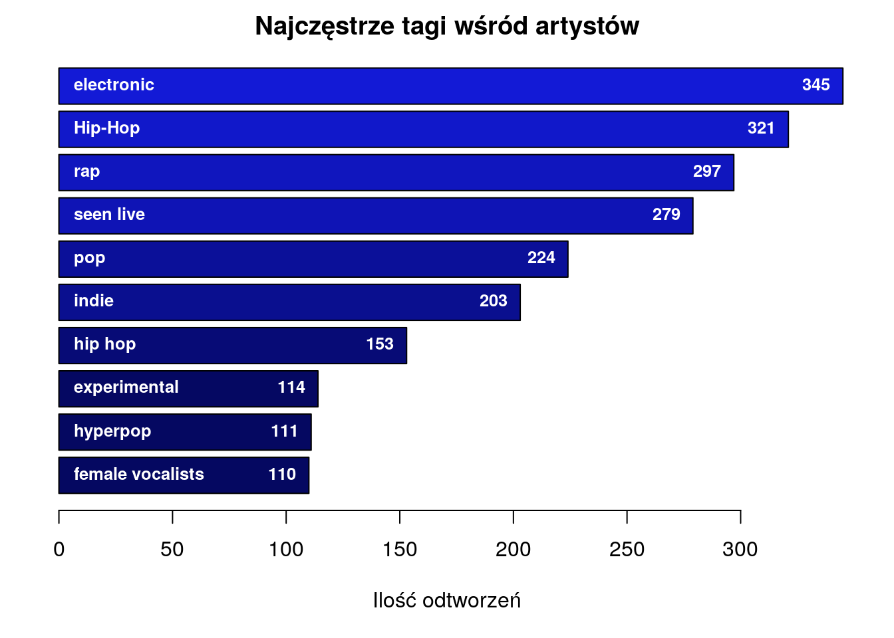

library(dplyr)
library(ggplot2)
library(lubridate)
#remotes::install_github("ppatrzyk/lastfmR")
library(lastfmR)1. R Wrapped

Projekt wykonany w języku R w ramach zajęć Prezentacja i wizualizacja danych
Wprowadzenie
Lubię słuchać muzyki. Łącząc to z moim nauturalnym drugiem do analizy danych, od pewnego czasu dokładnie analizuję jaką muzykę słucham.
Nie jestem jedynym, który miał taki pomysł. Dla osób, które dokładnie chcą wiedzieć czego słuchają powstała strona <last.fm>. Tam, po połączeniu z kontem Spotify, można dokładnie zobaczyć co i o której zostało przesłuchane.
Powstała nawet biblioteka w R autorstwa Piotra Patrzyka, która pozwala załadować dane ze swojego konta na lastFM w postaci data.frame w R
Dzięki tej bibliotece mogłem rozpocząć analizę.
Podstawową funkcją tej biblioteki jest get_scrobbles.
scrobbles <- get_scrobbles(user = "c00lll", timezone = 'Europe/Warsaw')head(scrobbles,10) date artist track album
<POSIXt> <char> <char> <char>
1: 2024-10-24 18:36:52 King Krule Half Man Half Shark The OOZ
2: 2024-10-24 18:35:46 King Krule Bermondsey Bosom (Right) The OOZ
3: 2024-10-24 18:30:28 King Krule Vidual The OOZ
4: 2024-10-24 18:27:22 King Krule A Slide In (New Drugs) The OOZ
5: 2024-10-24 18:22:41 King Krule Czech One The OOZ
6: 2024-10-24 18:19:47 King Krule Emergency Blimp The OOZ
7: 2024-10-24 18:14:54 King Krule Cadet Limbo The OOZ
8: 2024-10-24 18:10:09 King Krule Lonely Blue The OOZ
9: 2024-10-24 18:07:58 King Krule Sublunary The OOZ
10: 2024-10-24 18:04:08 King Krule Logos The OOZSortuje dane tak, aby najstarszy odsłuch był na górze. Potem zliczam, po raz który dany album/piosenka/artysta został odsłuchany. To przyda mi się później.
scrobbles <- scrobbles[(order(as.Date(scrobbles$date, format="%Y-%m-%d %H:%M:%S"))),]
scrobbles <- scrobbles[rev(order(as.Date(scrobbles$date, format="%Y-%m-%d %H:%M:%S"))),]
scrobbles <- scrobbles[(order(as.Date(scrobbles$date, format="%Y-%m-%d %H:%M:%S"))),]
scrobbles$jedynki <- 1
scrobbles$cum_sum <- ave(scrobbles$jedynki, scrobbles$track, FUN=cumsum)
scrobbles$cum_sum_artists <- ave(scrobbles$jedynki, scrobbles$artist, FUN=cumsum)
scrobbles$cum_sum_albums <- ave(scrobbles$jedynki, scrobbles$album, FUN=cumsum)
head(scrobbles,10) date artist track album jedynki cum_sum
<POSIXt> <char> <char> <char> <num> <num>
1: 2018-06-18 14:46:17 BROCKHAMPTON JUNKY SATURATION II 1 1
2: 2018-06-18 14:51:57 BROCKHAMPTON BANK SATURATION 1 1
3: 2018-06-18 14:55:13 BROCKHAMPTON TRIP SATURATION 1 1
4: 2018-06-18 14:58:37 BROCKHAMPTON STAR SATURATION 1 1
5: 2018-06-18 15:01:18 BROCKHAMPTON FAKE SATURATION 1 1
6: 2018-06-18 22:47:18 BROCKHAMPTON BANK SATURATION 1 2
7: 2018-06-18 22:50:51 BROCKHAMPTON TRIP SATURATION 1 2
8: 2018-06-18 22:54:30 BROCKHAMPTON STAR SATURATION 1 2
9: 2018-06-18 22:56:05 BROCKHAMPTON DIRT Dirt 1 1
10: 2018-06-19 00:00:01 BROCKHAMPTON DIRT Dirt 1 2
cum_sum_artists cum_sum_albums
<num> <num>
1: 1 1
2: 2 1
3: 3 2
4: 4 3
5: 5 4
6: 6 5
7: 7 6
8: 8 7
9: 9 1
10: 10 2Listy Top 10
Udało się! Teraz mogę wykonać analizy. Na początek zobaczmy, jakie jest 10 piosenek z największą liczbą odtworzeń.
#sortoowanie tabeli pod względem piosenek
count_whole <- table(scrobbles$track)
count_whole_sorted <- sort(count_whole, decreasing = T)
#Top 10 piosenek
top10_tracks_sorted <- head(count_whole_sorted, 10)
#wydruk w konsoli top 10 piosenek
for (i in 1:10) {
cat(paste0(i, ". ", scrobbles[track == names(top10_tracks_sorted[i])]$artist[2], " - ", names(top10_tracks_sorted[i]),": ", as.numeric(top10_tracks_sorted[i]), "\n"))
}1. Meek, Oh Why? - Pieśniarka i Król: 245
2. 100 gecs - money machine: 242
3. JPEGMAFIA - 1539 N. Calvert: 202
4. 100 gecs - hand crushed by a mallet: 187
5. Coals - Blue (feat. Schafter): 166
6. 100 gecs - ringtone: 157
7. 100 gecs - sympathy 4 the grinch: 148
8. laura les - Haunted: 147
9. ericdoa - movinglikeazombie - remix: 146
10. QUEEF JERKY - PINEAPPLE UPSIDE DOWN: 143for (i in 1:10) {
names(top10_tracks_sorted)[i] <- paste0(scrobbles[track == names(top10_tracks_sorted[i])]$artist[2], " - ", names(top10_tracks_sorted[i]))
}Zaprezentujmy to w formie jakiegoś wykresu.
par(mar=c(5,2,2,2))
pal <- colorRamp(c("#050861", "#131ad6"))
values_barplot <- as.numeric(rev(top10_tracks_sorted))
kolor_barplot <- rgb(pal((values_barplot - min(values_barplot))/ diff(range(values_barplot))), max=255)
barplot_tracks <- barplot(rev(top10_tracks_sorted), horiz = T, las = 1, yaxt = "n", xlim=c(0, max(scrobbles$cum_sum)), col = kolor_barplot, xlab = "Ilość odtworzeń", main = "Top 10 utworów wszechczasów")
text(as.numeric(rev(top10_tracks_sorted)), barplot_tracks, labels = as.numeric(rev(top10_tracks_sorted)), pos = 2, col = "white", cex = 3/4, font = 2)
text(1, barplot_tracks, labels = paste0(rev(names(top10_tracks_sorted))), pos = 4, col = "white", cex = 0.75, font = 2)
To samo powtarzam z artystami, a potem z albumami
count_artist <- table(scrobbles$artist)
artist_sorted <- sort(count_artist, decreasing = T)
#Top 10 artystów
top10_artist_sorted <- head(artist_sorted,10)
for (i in 1:10) {
cat(i, ". ", names(top10_artist_sorted[i]),": ", as.numeric(top10_artist_sorted[i]), "\n", sep = "")
}1. Taco Hemingway: 2774
2. 100 gecs: 2450
3. Holak: 2116
4. JPEGMAFIA: 2096
5. Meek, Oh Why?: 1937
6. Charli XCX: 1767
7. BROCKHAMPTON: 1692
8. TV Girl: 1417
9. Kendrick Lamar: 1294
10. ROSALÍA: 1018#plot Top 10 artystow
par(mar=c(5,2,2,2))
top10_artist_sorted <- head(artist_sorted,10)
pal <- colorRamp(c("#4f1403", "#992c0e"))
values_barplot <- as.numeric(rev(top10_artist_sorted))
kolor_barplot <- rgb(pal((values_barplot - min(values_barplot))/ diff(range(values_barplot))), max=255)
barplot_tracks <- barplot(rev(top10_artist_sorted), horiz = T, las = 1, yaxt = "n", col = kolor_barplot, xlab = "Ilość odtworzeń", main = "Top 10 artystów wszechczasów")
text(as.numeric(rev(top10_artist_sorted)), barplot_tracks, labels = as.numeric(rev(top10_artist_sorted)), pos = 2, col = "white", cex = 0.8, font = 2)
text(1, barplot_tracks, labels = paste0(rev(names(top10_artist_sorted))), pos = 4, col = "white", cex = ((-0.2/3483)*(as.numeric(top10_artist_sorted[1] - top10_artist_sorted[10]) ) + 0.8), font = 2)
count_album <- table(scrobbles$album)
albums_sorted <- sort(count_album, decreasing = T)
#Top 10 albumów
top10_albums_sorted <- head(albums_sorted,10)
for (i in 1:10) {
cat(i, ". ", scrobbles[album == names(top10_albums_sorted[i])]$artist[2], " - ", names(top10_albums_sorted[i]),": ", as.numeric(top10_albums_sorted[i]), "\n",sep = "")
}1. Meek, Oh Why? - Zachód: 1127
2. 100 gecs - 1000 gecs: 862
3. Travis Scott - ASTROWORLD: 652
4. 100 gecs - 1000 gecs and The Tree of Clues: 618
5. BROCKHAMPTON - GINGER: 612
6. Taco Hemingway - Café Belga: 571
7. Taco Hemingway - Pocztówka z WWA, lato '19: 556
8. Phoebe Bridgers - Punisher: 550
9. Blood Orange - Negro Swan: 541
10. JPEGMAFIA - Veteran: 537for (i in 1:10) {
names(top10_albums_sorted)[i] <- paste0(scrobbles[album == names(top10_albums_sorted[i])]$artist[2], " - ", names(top10_albums_sorted[i]))
}par(mar=c(5,2,2,2))
pal <- colorRamp(c("#004f1c", "#0fa343"))
values_barplot <- as.numeric(rev(top10_albums_sorted))
kolor_barplot <- rgb(pal((values_barplot - min(values_barplot))/ diff(range(values_barplot))), max=255)
barplot_tracks <- barplot(rev(top10_albums_sorted), horiz = T, las = 1, yaxt = "n", col = kolor_barplot, xlab = "Ilość odtworzeń", main = "Top 10 albumów wszechczasów")
text(as.numeric(rev(top10_albums_sorted)), barplot_tracks, labels = as.numeric(rev(top10_albums_sorted)), pos = 2, col = "white", cex = 0.8, font = 2)
text(1, barplot_tracks, labels = paste0(rev(names(top10_albums_sorted))), pos = 4, col = "white", cex = 0.7, font = 2)
Wyścigi utworów
Powyżesze wykresy przedstawiają stan aktualny (na wrzesień 2024). Natomiast moje preferencje z czasem się zmieniały. Rozpoczynając ten projekt, właśnie to chciałem zwizualizować.
Zobaczmy, jak zmieniali się liderzy w klasyfikacji odsłuchań.
#############
#Wyścig utworów
top_track <- scrobbles[track == names(count_whole_sorted[1]),]
plot(top_track$date, top_track$cum_sum, type = "s", col = "gold", lwd=3, xlim = c(min(scrobbles$date), max(scrobbles$date)), xlab = "Czas odsłuchu", ylab = "Ilość odtworzeń", main = "Wykres sumy odtworzeń utworów")
for (track_name in names(count_whole_sorted[1:1000])) {
to_draw <- scrobbles[track == track_name,]
lines(to_draw$date, to_draw$cum_sum, type = "s", col = "#dbd7ca")
}
lines(top_track$date, top_track$cum_sum, type = "s", col = "gold", lwd=3)
my_range <- 4:10
for (i in my_range) {
to_draw <- scrobbles[track == names(count_whole_sorted[i]),]
lines(to_draw$date, to_draw$cum_sum, type = "s", col = "black")
}
top_track3 <- scrobbles[track == names(count_whole_sorted[3]),]
lines(top_track3$date, top_track3$cum_sum, type = "s", col = "brown", lwd = 3)
top_track2 <- scrobbles[track == names(count_whole_sorted[2]),]
lines(top_track2$date, top_track2$cum_sum, type = "s", col = "grey", lwd = 3)
lines(top_track$date, top_track$cum_sum, type = "s", col = "gold", lwd=3)
legend(min(scrobbles$date), max(scrobbles$cum_sum), c(names(count_whole_sorted[1]), names(count_whole_sorted[2]), names(count_whole_sorted[3])), col=c("gold", "grey", "brown"),lty = 1, cex=0.6, title="Nazwy utworów", text.font=1) 
Najbardziej zaciekawił mnie trend, w którym wszystkie piosenki mają wielki wyskok na początku, po którym następuje zwolnienie. Jest to jak najbardziej spodziewane, ponieważ po pewnym czasie piosenki tracą na “świeżości” i przechodzę do kolejnej.
#############
#Wyścig artystow
top_artist <- scrobbles[artist == names(artist_sorted[1]),]
plot(top_artist$date, top_artist$cum_sum_artists, type = "s", col = "gold", lwd=3, xlim = c(min(scrobbles$date), max(scrobbles$date)), xlab = "Czas odsłuchu", ylab = "Ilość odtworzeń", main = "Wykres sumy odtworzeń artystow")
for (artist_name in names(artist_sorted[1:1000])) {
to_draw <- scrobbles[artist == artist_name,]
lines(to_draw$date, to_draw$cum_sum_artists, type = "s", col = "#dbd7ca")
}
my_range <- 4:10
for (i in my_range) {
to_draw <- scrobbles[artist == names(artist_sorted[i]),]
lines(to_draw$date, to_draw$cum_sum_artists, type = "s", col = "black")
}
top_artist3 <- scrobbles[artist == names(artist_sorted[3]),]
lines(top_artist3$date, top_artist3$cum_sum_artists, type = "s", col = "brown", lwd = 3)
top_artist2 <- scrobbles[artist == names(artist_sorted[2]),]
lines(top_artist2$date, top_artist2$cum_sum_artists, type = "s", col = "grey", lwd = 3)
lines(top_artist$date, top_artist$cum_sum_artists, type = "s", col = "gold", lwd=3)
legend(min(scrobbles$date), max(scrobbles$cum_sum_artists), c(names(artist_sorted[1]), names(artist_sorted[2]), names(artist_sorted[3])), col=c("gold", "grey", "brown"),lty = 1, cex=0.6, title="Nazwy artystów", text.font=1) 
#####
#Wyścig albumów
top_album <- scrobbles[album == names(albums_sorted[1]),]
plot(top_album$date, top_album$cum_sum_albums, type = "s", col = "gold", lwd=3, xlim = c(min(scrobbles$date), max(scrobbles$date)), xlab = "Moment odsłuchu", ylab = "Ilość odtworzeń", main = "Wykres sumy odtworzeń albumów")
for (album_name in names(albums_sorted[1:1000])) {
to_draw <- scrobbles[album == album_name,]
lines(to_draw$date, to_draw$cum_sum_albums, type = "s", col = "#dbd7ca")
}
my_range <- 4:10
for (i in my_range) {
to_draw <- scrobbles[album == names(albums_sorted[i]),]
lines(to_draw$date, to_draw$cum_sum_albums, type = "s", col = "black")
}
top_album3 <- scrobbles[album == names(albums_sorted[3]),]
lines(top_album3$date, top_album3$cum_sum_albums, type = "s", col = "brown", lwd = 3)
top_album2 <- scrobbles[album == names(albums_sorted[2]),]
lines(top_album2$date, top_album2$cum_sum_albums, type = "s", col = "grey", lwd = 3)
lines(top_album$date, top_album$cum_sum_albums, type = "s", col = "gold", lwd=3)
legend(min(scrobbles$date), max(scrobbles$cum_sum_albums), c(names(albums_sorted[1]), names(albums_sorted[2]), names(albums_sorted[3])), col=c("gold", "grey", "brown"),lty = 1, cex=0.7, title="Nazwy albumów", text.font=1) 
ggplot2
Inną rzeczą, którą chciałem sprawdzić jest to jak zmieniały się moje nawyki melomana podczas okresu zbierania danych. Czy teraz słucham więcej muzyki niż kiedyś?
library(ggplot2)
library(dplyr)
scrobbles_copy <- scrobbles
tibble_months <- (scrobbles_copy %>%
group_by(month = lubridate::floor_date(date, 'month')) %>%
summarize(l_wystapien = sum(jedynki)))
tibble_months$month_name <- month(tibble_months$month)
tibble_months$year <- year(tibble_months$month)
first_year <- tibble_months$year |> head(1)
current_year <- tibble_months$year |> tail(1)
# Heatmap
ggplot(tibble_months, aes(year, month_name)) +
geom_tile(aes(fill= l_wystapien), col = "white") +
scale_fill_gradient(low = "#fac8d8", high = "#87002b", name = "Odtworzenia") +
ggtitle("Liczba odsłuchań danego miesiąca") +
scale_y_reverse() + scale_x_discrete(limits=first_year:current_year)+
xlab("Rok") + ylab("Miesiąc")
#heatmap z wartosciami
ggplot(tibble_months, aes(year, month_name)) +
geom_tile(aes(fill= l_wystapien), col = "white") +
scale_fill_gradient(low = "#fac8d8", high = "#87002b", name = "Odtworzenia") +
ggtitle("Liczba odsłuchań danego miesiąca") +
scale_x_discrete(limits=first_year:current_year)+
xlab("Rok") + ylab("Miesiąc") +
geom_text(aes(label = l_wystapien), col = "white", cex = 4.5) +
scale_y_reverse()
Jednak więcej słuchałem kiedyś… Co ciekawe po rozpoczęciu pandemii w marcu 2020 roku liczba odtworzeń się drastycznie zmniejszyła. Można się było spodziewać, że miałem więcej wolengo czasu na słuchanie muzyki, lecz to jednak słuchanie muzyki w drodze do szkoły czy pracy nakręcało największe liczby.
Innym pytaniem jest co wydarzyło się w czerwcu 2024 roku? Był to dla mnie intensywny okres sesji, podczas którego wspomagałem się muzyką. Natomiast rozmiar tego wsparcia mocno mnie zaskoczył!
Jacy sąc najczęsciej słuchani artyści w każdym miesiącu?
### najpopularniejsci artysci dla kazdego miesiaca
library(zoo)
Attaching package: 'zoo'The following objects are masked from 'package:data.table':
yearmon, yearqtrThe following objects are masked from 'package:base':
as.Date, as.Date.numericfirst_scrobble_date <- scrobbles$date[1]
n_months <- 1 + interval(as.yearmon(first_scrobble_date), today()) %/% months(1)
detach("package:zoo", unload = TRUE)
#rządy to miesiące, kolumny to lata
# Pierwsszy rok, nie musial sie zaczac w styczniu
first_scrobble_date_month <- month(first_scrobble_date)
liczbLat <- ceiling((n_months - first_scrobble_date_month)/12) + 1
macierz <- matrix(NA, nrow = 12, ncol = liczbLat)
macierz_to_plot <- matrix(NA, n_months, 2)
date_temp <- min(scrobbles_copy$date)
date_temp <- floor_date(date_temp, 'month')
date_temp_next <- date_temp %m+% months(1)
pier_mies = first_scrobble_date_month
for (i in 1:n_months) {
month_in_scr <- scrobbles[scrobbles$date > date_temp & scrobbles$date < date_temp_next]
t_month_in_scr <- table(month_in_scr$artist)
t_month_in_scr <- sort(t_month_in_scr, decreasing = T)
naj_artysta <- names(t_month_in_scr[1])
ich_odtworzenia_wtedy <- as.numeric(t_month_in_scr[1])
date_temp_next <- date_temp_next %m+% months(1)
date_temp <- date_temp %m+% months(1)
macierz[pier_mies] = naj_artysta
macierz_to_plot[pier_mies-first_scrobble_date_month+1, 1] = substr(naj_artysta,1,26)
macierz_to_plot[pier_mies-first_scrobble_date_month+1, 2] = ich_odtworzenia_wtedy
pier_mies <- pier_mies + 1
}
#macierz
#macierz_to_plot
colnames(macierz) <- year(first_scrobble_date):year(tail(scrobbles$date,1))
rownames(macierz) <- c("Styczeń", "Luty", "Marzec", "Kwiecień", "Maj", "Czerwiec", "Lipiec", "Sierpień", "Wrzesień", "Październik", "Listopad", "Grudzień")
df_barplot <- as.data.frame(macierz_to_plot)
df_barplot$month_name <- tibble_months$month_name
df_barplot$year <- tibble_months$year
names(df_barplot)[1:2] <- c("Artysta", "Wystapienia_w_mies")
tibble_barplot <- as_tibble(df_barplot)
tibble_barplot$Wystapienia_w_mies <- as.double(tibble_barplot$Wystapienia_w_mies)
g <- ggplot(tibble_barplot, aes(year, as.numeric(month_name))) +
geom_tile(aes(fill= as.double(Wystapienia_w_mies)), col = "white") +
scale_fill_gradient(low = "#e5ced4", high = "#451350", name = "Odtworzenia \n w miesiącu") +
ggtitle("Liczba odsłuchań najczęściej słuchanego artysty danego miesiąca") +
scale_x_discrete(limits=year(first_scrobble_date):year(tail(scrobbles$date,1)))+
xlab("Rok") + ylab("Miesiąc") +
scale_y_reverse() +
geom_text(aes(label = substr(Artysta, 1, 14)), col = "white", size = 1.7, font = 2)
g
Dzięki temu wykresowi możemy zobaczyć, że do wysokiego wyniku w czerwcu 2024 przyczyniłą się również premiera nowego albumu Charli XCX pt. “brat”
Spójrzmy w jakich miesiącach roku, słuchałem najwięcej.
#Średnia Liczba odtworzeń na miesiąc
srednie_wartosci <- tibble_months %>%
group_by(month_name) %>%
summarise(SredniaWartosc = mean(l_wystapien))
srednie_wartosci <- setNames(srednie_wartosci, c("Miesiąc", "Średnia Liczba odtworzeń na miesiąc"))
srednie_wartosci$Miesiąc <- factor(month.name[srednie_wartosci$Miesiąc], levels = month.name)
par(mar=c(5,6,3,3))
pal <- colorRamp(c("#37420D", "#9CBD26"))
values_barplot <- as.numeric(rev(srednie_wartosci$`Średnia Liczba odtworzeń na miesiąc`))
kolor_barplot <- rgb(pal((values_barplot - min(values_barplot))/ diff(range(values_barplot))), max=255)
barplot_mies <- barplot(rev(srednie_wartosci$`Średnia Liczba odtworzeń na miesiąc`), names = rev(srednie_wartosci$Miesiąc), las = 1, xlim=c(0,max(srednie_wartosci$`Średnia Liczba odtworzeń na miesiąc`)), horiz = T, col = kolor_barplot, xlab = "Ilość odtworzeń", main = "Średnia liczba odtworzeń w miesiącu")
text(((max(srednie_wartosci$`Średnia Liczba odtworzeń na miesiąc`))/30), barplot_mies, labels = round(rev(srednie_wartosci$`Średnia Liczba odtworzeń na miesiąc`)), col = "white", font = 2, cex = 0.9)
Oraz sprójrzmy w jakich latach słuchałem najwięcej
by_year <- aggregate(l_wystapien ~ year, data=tibble_months, sum)
by_year <- setNames(by_year, c("Rok", "Liczba odtworzeń"))
barplot_przed_usr <- barplot(by_year[,2], names = by_year[,1], ylim = c(0,18000), main = "Liczba odtworzeń w ciągu roku", col = "#aa5555")
text(barplot_przed_usr, by_year[,2] + 650, labels = by_year[,2])
#Srednia odtworzen na miesiąc podczas danego roku
by_year$l_miesiecy <-c(12 - first_scrobble_date_month + 1,rep(12, length.out = floor((n_months - (12 - first_scrobble_date_month + 1))/12)),(n_months - (12 - first_scrobble_date_month + 1)) %% 12)
by_year$na_mies <- by_year$`Liczba odtworzeń` / by_year$l_miesiecy
by_year$na_mies <- round(by_year$na_mies,0)
#t(by_year)
pokaz_by_year <- t(by_year[c(1,4)])
#pokaz_by_year
barplot_lata <- barplot(pokaz_by_year[2,], names = pokaz_by_year[1,], col = "#aa5555", ylim=c(0,1500), main = "Średnia liczba odtworzeń na miesiąc")
text(barplot_lata, pokaz_by_year[2,] + 50, labels = pokaz_by_year[2,])
Teraz zobaczmy, w jakich godzinach dnia najczęściej słucham muzyki.
library(lubridate)
#heat map dzien/godzina
day_plot <- (scrobbles_copy %>%
group_by(date = lubridate::floor_date(date, 'hour')) %>%
summarize(l_wystapien = sum(jedynki)))
#day_plot$day <- wday(day_plot$date, week_start = getOption("lubridate.week.start", 1))
day_plot$day <- wday(day_plot$date - days(1))
day_plot$hour <- hour(day_plot$date)
day_plot_to_draw <- day_plot %>%
group_by(day, hour) %>%
summarise(Suma = sum(l_wystapien))`summarise()` has grouped output by 'day'. You can override using the `.groups`
argument.# Heatmap
g <- ggplot(day_plot_to_draw, aes(day, hour)) +
geom_tile(aes(fill= Suma), col = "white") +
scale_fill_gradient(low = "#fad8e8", high = "#67000b", name = "Odtworzenia") +
ggtitle("Liczba odsłuchań o danej pory dnia") + scale_x_discrete(limits=1:7, labels = c("Poniedziałek", "Wtorek", "Środa", "Czwartek", "Piątek", "Sobota", "Niedziela")) +
scale_y_discrete(limits=0:23) + xlab("Dzień tygodnia") + ylab("Godzina")
g
#dodanie wartości na mapę
g + geom_text(aes(label = Suma), col = "white", cex = 3)
# dzien i godzina z najwieksza iloscia odsłuchań
#day_plot_to_draw[which.max(day_plot_to_draw$Suma),]Królują godziny popołudniowe powrotu ze szkoły i pracy. Najwięcej we wtorek o godz. 17.
Chmura gatunków
Zobaczmy jakie gatunki najczęsciej się przewijają u artysów, których słucham.
artist_info <- get_library_info(user = "c00lll")library(stringr)
library(wordcloud)Loading required package: RColorBrewer#wordcloud
artist_info$genres <- str_split(artist_info$artist_tags, "; ")
genres_unlisted <- unlist(artist_info$genres)
# Utworzenie tabeli częstości gatunków
tabela_czestosci_gatunkow <- table(genres_unlisted)
lista_nazw_gat <- names(tabela_czestosci_gatunkow)
#chmura słów
par(mar=c(2,2,2,2))
wordcloud(lista_nazw_gat, as.numeric(tabela_czestosci_gatunkow), colors = c("#101112", "#384a8c", "#db8904"))najczestszy_gatunek <- names(tabela_czestosci_gatunkow)[which.max(tabela_czestosci_gatunkow)]
test_cgest <- rev(sort(tabela_czestosci_gatunkow, deacreasing = T))
#test_cgest[1]
# Lista najczęstszych gatunków wśrod artystów
for (i in 1:10){
cat(paste0(i, ". ", names(test_cgest[i]), ": ", as.numeric(test_cgest[i]), "\n"))
}1. electronic: 502
2. Hip-Hop: 431
3. rap: 391
4. seen live: 384
5. pop: 341
6. indie: 331
7. hip hop: 210
8. indie pop: 177
9. experimental: 161
10. female vocalists: 160tc <- head(test_cgest,10)
par(mar=c(5,2,2,2))
pal <- colorRamp(c("#050861", "#131ad6"))
values_barplot <- as.numeric(rev(tc))
kolor_barplot <- rgb(pal((values_barplot - min(values_barplot))/ diff(range(values_barplot))), max=255)
barplot_tracks <- barplot(rev(tc), horiz = T, las = 1, yaxt = "n", col = kolor_barplot, xlab = "Ilość odtworzeń", main = "Najczęstrze tagi wśród artystów")
text(as.numeric(rev(tc)), barplot_tracks, labels = as.numeric(rev(tc)), pos = 2, col = "white", cex = 0.8, font = 2)
text(1, barplot_tracks, labels = paste0(rev(names(tc))), pos = 4, col = "white", cex = 0.8, font = 2)